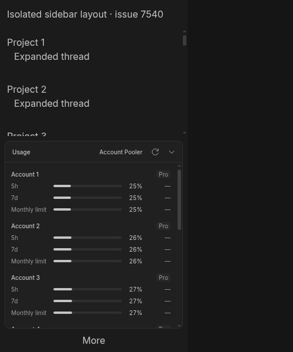
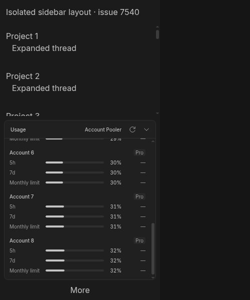
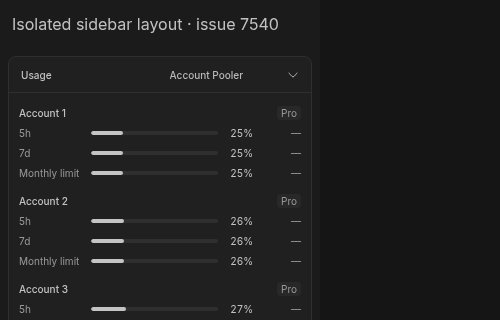

#7540 · Sidebar usage scroll reachability
Verdict: PARTIALLY REPRODUCED · Root-cause confidence: medium for the report overall; high for the isolated short-viewport mechanism.
1. TL;DR
The current source already limits the usage disclosure to 20rem and gives the account list its own vertical scrollbar. Three accounts remain reachable at 1400, 800, 600 and 400 CSS pixels; with eight accounts the list scrolls 432 pixels and reaches the last row at each of those heights. A separate edge case is reproducible at 320 CSS pixels: the fixed-height disclosure extends below the viewport, so scrolling its inner list cannot bring the last row onto the screen. Both clean checkouts produced identical results. This is not a reproduction of the reported default-zoom Windows desktop failure: desktop windows have a 600-pixel minimum height, and Windows/Electron was not available.
2. Claims vs findings
| Claim | Finding | Evidence |
|---|---|---|
| Three accounts are cut off at ordinary desktop heights. | Not reproduced in this layout harness | All rows reachable at 1400, 800 and 600 CSS pixels, also at 400. |
| The usage panel has no maximum height or scroll area. | Refuted on the recorded source commit | Host wrapper: max-h-80 overflow-auto; plugin: max-h-80 and min-h-0 overflow-y-auto. Computed overflow-y is auto. |
| At sufficiently small heights some content is unreachable. | Verified with a narrower scope | At 320 CSS pixels, the third account's last row ends at y=359, below the viewport; the disclosure remains 312 pixels tall. |
| Expanded project lists force the usage panel down at 1400 pixels. | Not reproduced | Twenty expanded project entries use the real SidebarContent component; it shrinks and scrolls independently. |
| The same failure occurs in bb 0.49.0 on Windows 11 at default zoom. | Unverified | Linux headless Chromium only. No packaged Windows build, account credentials, OS scaling, or original screenshot was used. |
3. Environment and trust boundary
- Trusted get-bb/bb origin/main:
f024a372f0e1e0670f6fd7452ebcd1341f639c95; fetched and checked again before publication. - Linux x86_64, Node v22.19.0, Google Chrome for Testing 157.0.8103.78. Source package bb-app reports 0.49.0.
- Two separate temporary Git worktrees, named base and verify, at that same SHA. Browser sessions use separate empty profiles. Ladle ports: 49140 and 49141.
- No BB application server or host daemon was started; no application database/data directory, real provider process, account file, or credential was read. All account data is synthetic and contains no email addresses.
- The harness mounts the real ProviderUsageStatusContent, PluginSidebarFooterDisclosure, SidebarContent and SidebarFooter components. The surrounding vertical shell and project entries are synthetic, derived from AppSidebar's column layout. This is not a full AppSidebar or Windows/Electron end-to-end test.
- Only test/story setup changed: a local story and two Ladle config additions. The Vite pluginZodRuntime registration repairs the story environment's missing virtual module; it is not a product fix.
- Issue text was treated only as untrusted claims. No issue-supplied commands, links, code, or patches were executed. No workflow or subagent was started.
4. Minimal reproduction
- Clone the trusted repository and check out the recorded commit; install frozen dependencies and build the SDK and app through Turbo.
git clone https://github.com/get-bb/bb.git bb-7540 cd bb-7540 git checkout --detach f024a372f0e1e0670f6fd7452ebcd1341f639c95 pnpm install --frozen-lockfile --prefer-offline pnpm exec turbo run build build:types --filter=@get-bb/plugin-sdk pnpm exec turbo run build --filter=@bb/app --filter=@bb/server --filter=@bb/host-daemon --filter=@bb/scripts --filter=@bb/cli --filter=bb-app
- Save the complete inline harness patch below as
harness.patch, apply it withgit apply harness.patch, and runpnpm exec turbo run storybook --filter=@bb/app -- --port 49140. Use a free port and a fresh temporary checkout. No BB data directory is required. - Open
http://127.0.0.1:49140/?story=issue-7540--sidebar&mode=preview&accounts=3in an isolated browser. At 600 CSS pixels tall all three accounts are visible. Resize to 320 CSS pixels tall: the final account's lower rows and the More button leave the viewport. - For the scrolling control, use
accounts=8and a height of 600 CSS pixels. Scroll the quota panel to its bottom: Account 8 and its final row are reachable. - Save the complete inline browser measurement script below as
check-sidebar.jsand run it through BB Browser Automation. It records a 3/8-account by 1400/800/600/400/320-pixel matrix and measures last-row reachability after scrolling to the bottom. Example:bb browser-automation run SESSION --script-file /absolute/path/check-sidebar.js --script-host HOST --timeout 120s --json. The script's port is 49140; change only that port to 49141 for the second checkout.
Expected invariant: the final row is within the visible quota panel after scrolling to its end. Actual: eight of ten cases satisfy it; both 320-pixel cases fail. Each result is identical in both checkouts.
| Accounts | Viewport | Client / scroll height | Scroll top | Last row / visible bottom | Result |
|---|---|---|---|---|---|
| 3 | 1400 | 276 / 276 | 0 | 1351 / 1360 | Reachable |
| 3 | 800 | 276 / 276 | 0 | 751 / 760 | Reachable |
| 3 | 600 | 276 / 276 | 0 | 551 / 560 | Reachable |
| 3 | 400 | 276 / 276 | 0 | 359 / 368 | Reachable |
| 3 | 320 | 276 / 276 | 0 | 359 / 320 | Clipped |
| 8 | 1400 | 284 / 716 | 432 | 1351 / 1360 | Reachable |
| 8 | 800 | 284 / 716 | 432 | 751 / 760 | Reachable |
| 8 | 600 | 284 / 716 | 432 | 551 / 560 | Reachable |
| 8 | 400 | 284 / 716 | 432 | 367 / 376 | Reachable |
| 8 | 320 | 284 / 716 | 432 | 367 / 320 | Clipped |
First run, verbatim measurement output
[
{
"viewportHeight": 1400,
"accounts": 3,
"panelHeight": 276,
"panelScrollHeight": 276,
"overflowY": "auto",
"scrollTop": 0,
"disclosureHeight": 312,
"lastBottom": 1351,
"visibleBottom": 1360,
"reachable": true
},
{
"viewportHeight": 800,
"accounts": 3,
"panelHeight": 276,
"panelScrollHeight": 276,
"overflowY": "auto",
"scrollTop": 0,
"disclosureHeight": 312,
"lastBottom": 751,
"visibleBottom": 760,
"reachable": true
},
{
"viewportHeight": 600,
"accounts": 3,
"panelHeight": 276,
"panelScrollHeight": 276,
"overflowY": "auto",
"scrollTop": 0,
"disclosureHeight": 312,
"lastBottom": 551,
"visibleBottom": 560,
"reachable": true
},
{
"viewportHeight": 400,
"accounts": 3,
"panelHeight": 276,
"panelScrollHeight": 276,
"overflowY": "auto",
"scrollTop": 0,
"disclosureHeight": 312,
"lastBottom": 359,
"visibleBottom": 368,
"reachable": true
},
{
"viewportHeight": 320,
"accounts": 3,
"panelHeight": 276,
"panelScrollHeight": 276,
"overflowY": "auto",
"scrollTop": 0,
"disclosureHeight": 312,
"lastBottom": 359,
"visibleBottom": 320,
"reachable": false
},
{
"viewportHeight": 1400,
"accounts": 8,
"panelHeight": 284,
"panelScrollHeight": 716,
"overflowY": "auto",
"scrollTop": 432,
"disclosureHeight": 320,
"lastBottom": 1351,
"visibleBottom": 1360,
"reachable": true
},
{
"viewportHeight": 800,
"accounts": 8,
"panelHeight": 284,
"panelScrollHeight": 716,
"overflowY": "auto",
"scrollTop": 432,
"disclosureHeight": 320,
"lastBottom": 751,
"visibleBottom": 760,
"reachable": true
},
{
"viewportHeight": 600,
"accounts": 8,
"panelHeight": 284,
"panelScrollHeight": 716,
"overflowY": "auto",
"scrollTop": 432,
"disclosureHeight": 320,
"lastBottom": 551,
"visibleBottom": 560,
"reachable": true
},
{
"viewportHeight": 400,
"accounts": 8,
"panelHeight": 284,
"panelScrollHeight": 716,
"overflowY": "auto",
"scrollTop": 432,
"disclosureHeight": 320,
"lastBottom": 367,
"visibleBottom": 376,
"reachable": true
},
{
"viewportHeight": 320,
"accounts": 8,
"panelHeight": 284,
"panelScrollHeight": 716,
"overflowY": "auto",
"scrollTop": 432,
"disclosureHeight": 320,
"lastBottom": 367,
"visibleBottom": 320,
"reachable": false
}
]
Second clean run, verbatim measurement output
[
{
"viewportHeight": 1400,
"accounts": 3,
"panelHeight": 276,
"panelScrollHeight": 276,
"overflowY": "auto",
"scrollTop": 0,
"disclosureHeight": 312,
"lastBottom": 1351,
"visibleBottom": 1360,
"reachable": true
},
{
"viewportHeight": 800,
"accounts": 3,
"panelHeight": 276,
"panelScrollHeight": 276,
"overflowY": "auto",
"scrollTop": 0,
"disclosureHeight": 312,
"lastBottom": 751,
"visibleBottom": 760,
"reachable": true
},
{
"viewportHeight": 600,
"accounts": 3,
"panelHeight": 276,
"panelScrollHeight": 276,
"overflowY": "auto",
"scrollTop": 0,
"disclosureHeight": 312,
"lastBottom": 551,
"visibleBottom": 560,
"reachable": true
},
{
"viewportHeight": 400,
"accounts": 3,
"panelHeight": 276,
"panelScrollHeight": 276,
"overflowY": "auto",
"scrollTop": 0,
"disclosureHeight": 312,
"lastBottom": 359,
"visibleBottom": 368,
"reachable": true
},
{
"viewportHeight": 320,
"accounts": 3,
"panelHeight": 276,
"panelScrollHeight": 276,
"overflowY": "auto",
"scrollTop": 0,
"disclosureHeight": 312,
"lastBottom": 359,
"visibleBottom": 320,
"reachable": false
},
{
"viewportHeight": 1400,
"accounts": 8,
"panelHeight": 284,
"panelScrollHeight": 716,
"overflowY": "auto",
"scrollTop": 432,
"disclosureHeight": 320,
"lastBottom": 1351,
"visibleBottom": 1360,
"reachable": true
},
{
"viewportHeight": 800,
"accounts": 8,
"panelHeight": 284,
"panelScrollHeight": 716,
"overflowY": "auto",
"scrollTop": 432,
"disclosureHeight": 320,
"lastBottom": 751,
"visibleBottom": 760,
"reachable": true
},
{
"viewportHeight": 600,
"accounts": 8,
"panelHeight": 284,
"panelScrollHeight": 716,
"overflowY": "auto",
"scrollTop": 432,
"disclosureHeight": 320,
"lastBottom": 551,
"visibleBottom": 560,
"reachable": true
},
{
"viewportHeight": 400,
"accounts": 8,
"panelHeight": 284,
"panelScrollHeight": 716,
"overflowY": "auto",
"scrollTop": 432,
"disclosureHeight": 320,
"lastBottom": 367,
"visibleBottom": 376,
"reachable": true
},
{
"viewportHeight": 320,
"accounts": 8,
"panelHeight": 284,
"panelScrollHeight": 716,
"overflowY": "auto",
"scrollTop": 432,
"disclosureHeight": 320,
"lastBottom": 367,
"visibleBottom": 320,
"reachable": false
}
]



Browser measurement script, complete
const page = await browser.getPage("main");
const results = [];
for (const accounts of [3, 8]) {
for (const height of [1400, 800, 600, 400, 320]) {
await page.setViewport({ width: 1000, height });
await page.goto(`http://127.0.0.1:49140/?story=issue-7540--sidebar&mode=preview&accounts=${accounts}`);
await page.waitForSelector('[data-repro-sidebar] [role="tabpanel"]');
await page.evaluate(() => new Promise(resolve => requestAnimationFrame(() => requestAnimationFrame(resolve))));
const result = await page.evaluate(() => {
const panel = document.querySelector('[data-repro-sidebar] [role="tabpanel"]');
const disclosure = document.querySelector('[data-testid="plugin-sidebar-footer-disclosure-bb--provider-usage-usage"]');
panel.scrollTop = panel.scrollHeight;
const rows = panel.querySelectorAll('button');
const last = rows.item(rows.length - 1);
const bottom = Math.min(panel.getBoundingClientRect().bottom, disclosure.getBoundingClientRect().bottom, window.innerHeight);
const lastBottom = last.getBoundingClientRect().bottom;
return {
viewportHeight: window.innerHeight,
accounts: panel.querySelectorAll('section[aria-label]').length,
panelHeight: panel.clientHeight,
panelScrollHeight: panel.scrollHeight,
overflowY: getComputedStyle(panel).overflowY,
scrollTop: panel.scrollTop,
disclosureHeight: disclosure.getBoundingClientRect().height,
lastBottom,
visibleBottom: bottom,
reachable: lastBottom <= bottom + 1,
};
});
results.push(result);
}
}
console.log(JSON.stringify(results, null, 2));
Source-level story harness, complete
import { ProviderUsageStatusContent, type UsageStoreSnapshot } from "../../../plugins/provider-usage/app";
import { SidebarContent, SidebarFooter } from "../src/components/ui/sidebar";
import { PluginSidebarFooterDisclosure } from "../src/components/plugin/PluginSidebarFooterItems";
import { SidebarFooterItemRuntime } from "../../../packages/plugin-sdk/src/internal/sidebar-footer-runtime";
export default { title: "Issue 7540" };
const count = Number(new URLSearchParams(window.location.search).get("accounts") ?? 3);
const snapshot: UsageStoreSnapshot = {
error: null,
isRefreshing: false,
data: {
machines: [{
id: "source:account-pool",
displayName: "Account Pooler",
status: "connected",
error: null,
providers: Array.from({ length: count }, (_, index) => ({
id: `account-${index + 1}`,
providerId: "codex",
accountLabel: `Account ${index + 1}`,
displayName: "Codex",
logoUrl: null,
icon: null,
strings: { iconTint: null },
signInHint: "Sign in.",
expiredHint: "Sign in again.",
usage: {
status: "ok",
accountEmail: null,
planLabel: "Pro",
windows: ["Five-hour limit", "Weekly limit", "Monthly limit"].map((label) => ({
label,
usedPercent: 25 + index,
resetsAt: null,
cost: null,
})),
},
})),
}],
},
};
function UsageContent({ dismiss }: { dismiss(): void }) {
return <ProviderUsageStatusContent pluginId="bb--provider-usage" dismiss={dismiss} snapshot={snapshot} threadMachineId={null} refreshEnabled={false} />;
}
const item = {
source: "experimental_sidebarFooter" as const,
kind: "disclosure" as const,
id: "usage",
pluginId: "bb--provider-usage",
generation: 1,
label: "Provider usage",
icon: "ChartColumn",
component: UsageContent,
runtime: new SidebarFooterItemRuntime(),
};
export function Sidebar() {
return (
<div data-repro-sidebar="" className="flex h-screen w-80 flex-col overflow-hidden bg-sidebar text-sidebar-foreground">
<div className="flex h-12 shrink-0 items-center px-3">Isolated sidebar layout · issue 7540</div>
<SidebarContent>
{Array.from({ length: 20 }, (_, index) => (
<div key={index} className="shrink-0 p-3">Project {index + 1}<div className="pl-3">Expanded thread</div></div>
))}
</SidebarContent>
<div className="relative flex flex-col gap-2 px-2 pt-2">
<PluginSidebarFooterDisclosure item={item} onDismiss={() => {}} />
</div>
<SidebarFooter><button type="button">More</button></SidebarFooter>
</div>
);
}
Complete test-only harness patch
diff --git a/apps/app/.ladle/config.mjs b/apps/app/.ladle/config.mjs
index bc84f25381..f2c7919d1c 100644
--- a/apps/app/.ladle/config.mjs
+++ b/apps/app/.ladle/config.mjs
@@ -40,6 +40,7 @@ function formatNetworkUrls(serverUrl) {
/** @type {import("@ladle/react").UserConfig} */
export default {
stories: [
+ ".ladle/issue-7540.stories.tsx",
"src/**/*.stories.tsx",
"../../plugins/automations/*.stories.tsx",
"../../plugins/github-pr-status/ui/*.stories.tsx",
diff --git a/apps/app/.ladle/vite.config.ts b/apps/app/.ladle/vite.config.ts
index 3db97b4010..1689f10c6d 100644
--- a/apps/app/.ladle/vite.config.ts
+++ b/apps/app/.ladle/vite.config.ts
@@ -4,6 +4,7 @@ import tailwindcss from "@tailwindcss/vite";
import { resolveCurrentDevInstanceConfig } from "@bb/config/runtime";
import { forkablePluginPaths } from "../vite-forkable-plugin-paths.js";
import { sharedUiEnvSeam } from "../vite-shared-ui-seam.js";
+import { pluginZodRuntime } from "../vite-plugin-zod-runtime.js";
const repoRoot = path.resolve(__dirname, "../../..");
const devInstance = resolveCurrentDevInstanceConfig(repoRoot);
@@ -13,6 +14,7 @@ const trustedDevAppHeaders = {
export default defineConfig({
plugins: [
+ pluginZodRuntime(),
forkablePluginPaths(path.resolve(__dirname, "../src")),
sharedUiEnvSeam(),
tailwindcss(),
diff --git a/apps/app/.ladle/issue-7540.stories.tsx b/apps/app/.ladle/issue-7540.stories.tsx
new file mode 100644
index 0000000000..9325d41c42
--- /dev/null
+++ b/apps/app/.ladle/issue-7540.stories.tsx
@@ -0,0 +1,75 @@
+import { ProviderUsageStatusContent, type UsageStoreSnapshot } from "../../../plugins/provider-usage/app";
+import { SidebarContent, SidebarFooter } from "../src/components/ui/sidebar";
+import { PluginSidebarFooterDisclosure } from "../src/components/plugin/PluginSidebarFooterItems";
+import { SidebarFooterItemRuntime } from "../../../packages/plugin-sdk/src/internal/sidebar-footer-runtime";
+
+export default { title: "Issue 7540" };
+
+const count = Number(new URLSearchParams(window.location.search).get("accounts") ?? 3);
+const snapshot: UsageStoreSnapshot = {
+ error: null,
+ isRefreshing: false,
+ data: {
+ machines: [{
+ id: "source:account-pool",
+ displayName: "Account Pooler",
+ status: "connected",
+ error: null,
+ providers: Array.from({ length: count }, (_, index) => ({
+ id: `account-${index + 1}`,
+ providerId: "codex",
+ accountLabel: `Account ${index + 1}`,
+ displayName: "Codex",
+ logoUrl: null,
+ icon: null,
+ strings: { iconTint: null },
+ signInHint: "Sign in.",
+ expiredHint: "Sign in again.",
+ usage: {
+ status: "ok",
+ accountEmail: null,
+ planLabel: "Pro",
+ windows: ["Five-hour limit", "Weekly limit", "Monthly limit"].map((label) => ({
+ label,
+ usedPercent: 25 + index,
+ resetsAt: null,
+ cost: null,
+ })),
+ },
+ })),
+ }],
+ },
+};
+
+function UsageContent({ dismiss }: { dismiss(): void }) {
+ return <ProviderUsageStatusContent pluginId="bb--provider-usage" dismiss={dismiss} snapshot={snapshot} threadMachineId={null} refreshEnabled={false} />;
+}
+
+const item = {
+ source: "experimental_sidebarFooter" as const,
+ kind: "disclosure" as const,
+ id: "usage",
+ pluginId: "bb--provider-usage",
+ generation: 1,
+ label: "Provider usage",
+ icon: "ChartColumn",
+ component: UsageContent,
+ runtime: new SidebarFooterItemRuntime(),
+};
+
+export function Sidebar() {
+ return (
+ <div data-repro-sidebar="" className="flex h-screen w-80 flex-col overflow-hidden bg-sidebar text-sidebar-foreground">
+ <div className="flex h-12 shrink-0 items-center px-3">Isolated sidebar layout · issue 7540</div>
+ <SidebarContent>
+ {Array.from({ length: 20 }, (_, index) => (
+ <div key={index} className="shrink-0 p-3">Project {index + 1}<div className="pl-3">Expanded thread</div></div>
+ ))}
+ </SidebarContent>
+ <div className="relative flex flex-col gap-2 px-2 pt-2">
+ <PluginSidebarFooterDisclosure item={item} onDismiss={() => {}} />
+ </div>
+ <SidebarFooter><button type="button">More</button></SidebarFooter>
+ </div>
+ );
+}
Report repository policy prohibits publishing separate scripts, tests, patches or raw JSON dumps. The complete reproduction sources and exact outputs are therefore inline; the raw files are retained only in the local ignored report workspace.
5. Root cause
The report's proposed absence of scrolling is not true on main. The plugin root uses flex max-h-80 flex-col. Its quota panel uses min-h-0 overflow-y-auto p-2.5. The host disclosure measures its content, sets the section height to that measurement, and wraps the content in max-h-80 overflow-auto. With eight accounts the computed quota panel has a 284px client height and 716px scroll height, demonstrating real overflow and scrolling.
The narrower edge case is an outer-layout constraint, not a missing inner scrollbar: neither fixed 20rem cap accounts for the available sidebar height. AppSidebar places the disclosure after SidebarContent inside a wrapper with no viewport-dependent maximum. When the entire disclosure is below the viewport, inner scrolling cannot reveal pixels outside that viewport. In the harness, a 48px header plus disclosure and footer exceeds 320px even when the project area shrinks to zero. Three accounts fit the 276px quota panel without inner overflow; its last row still ends at y=359.
Desktop declares MIN_WINDOW_HEIGHT = 600, and window creation applies it. Therefore the 320px result cannot establish the reported default-zoom desktop defect. A CSS delivery/version-skew problem, Windows-specific sizing, or additional unmodeled sidebar content remains possible, but none was demonstrated here. The current max-height/scroll classes date back to commit c7d2c7f5938 on September 14, 2026; this is not evidence of a newly landed fix after the issue.
6. Proposed fix or next experiment
Do not add a second scrollbar blindly: both scroll boundaries already exist. First reproduce the actual Windows desktop configuration using a redacted screenshot plus computed style and geometry for the disclosure and tabpanel, including zoom and effective CSS viewport height. If the supported desktop case shows the same outer constraint, make the host disclosure shrink to available sidebar space and size its scroll viewport from that constraint, retaining a visible header and footer. Verify the full AppSidebar boundary and popup behavior rather than relying only on this simplified shell.
Simple-fix decision: no production change, branch, push, or PR. Only a below-minimum-height variant reproduces; the supported Windows scenario lacks a faithful failing regression test. A small CSS change cannot be asserted to fix that report safely from this evidence. No linked open PR was found in issue cross-references or the open-PR search for 7540.
7. Verification
The same agent repeated the experiment in a second newly created worktree at f024a372f0e1e0670f6fd7452ebcd1341f639c95. It received its own frozen dependency install, SDK build, identical test-only harness, port 49141, and a new empty browser profile. Command: bb browser-automation run SECOND_SESSION --script "$(sed 's/49140/49141/g' check-sidebar.js)" --timeout 120s --json. The resulting ten geometry records exactly match the first run. This is a repeat check by the same agent, not independent verification.
Report correction after testing: the broad claim that the panel lacks scrolling was rejected; the finding is limited to the short-viewport edge case, so the verdict is PARTIALLY REPRODUCED rather than REPRODUCED.
8. Related issues
The repository search found #5860, which concerns clipping of upward-opening plugin popovers. That is a different boundary from quota-list scrolling, so this investigation does not assert duplication. No linked PR required review.
9. Appendix and checks
pnpm exec turbo run build build:types --filter=@get-bb/plugin-sdk Tasks: 5 successful, 5 total pnpm exec turbo run build --filter=@bb/app --filter=@bb/server --filter=@bb/host-daemon --filter=@bb/scripts --filter=@bb/cli --filter=bb-app Tasks: 63 successful, 63 total pnpm exec turbo run test --filter=bb-plugin-bb--provider-usage Test Files 5 passed (5) Tests 23 passed (23) pnpm exec turbo run test --filter=@bb/app -- src/components/plugin/PluginSidebarFooterItems.test.tsx src/components/ui/sidebar.test.tsx Test Files 2 passed (2) Tests 70 passed (70)
The first unfiltered monorepo build failed because the SDK runtime distribution was not built before unrelated plugin build tasks. Building the SDK first and using the root application's normal package filters succeeded; no production build fix was made. Browser prerequisites were installed outside the repository, with no dependency or lockfile change. The second checkout rebuilt the SDK and served trusted source through Ladle; it did not repeat the full monorepo build or Windows packaging.
All screenshots are real captures of the named source components with synthetic data, converted losslessly from the captured JPEG into PNG files. No screenshot or test output was fabricated. Test harness artifacts are the only bb source changes, and no production fix is claimed.
> AGENT GENERATED